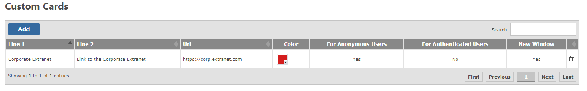

Custom cards allow you to create Workspace style cards which link to additional resources, such as your coporate extranet, or other systems.

To create a custom card, click Add, and complete the form.
Click save to finish
To edit the records, click on the property, inline editing will be activated. Make the change and press enter to commit the change.
The default workspace denotes the view that a new Portal user (one who hasn't created any workspaces themselves) will see. It is sometimes better than a shared workspace, because shared workspaces track changes and can be resource intensive given that every> ticket is 'new' to a new user.
Select the workspace from the list and click save.
When a new user visits the Gemini site, they will have this workspace's filter and column definition applied. It will run under their context, so if "assigned to me" was enabled, each new user would still only see their own assigned issues.
This section shows all the workspaces from the selected user. All users, including disabled users, are shown here. Selecting a user will show their workspaces in the table below.
If a user has left the organization, or is no longer active in Gemini, their workspaces, especially shared ones, could cause unecessary notifications, or take space in the workspace list. It is possible to change ownership of workspaces, to disable alerts and reports, or revoke sharing.
First select the workspace to take ownership of, then select the user who will take ownership, and click the Move Workspace button. The workspace will be moved to the new owner, and if that is the current user the workspace will appear on the left hand side as normal. From there, it can be edited and managed as normal.